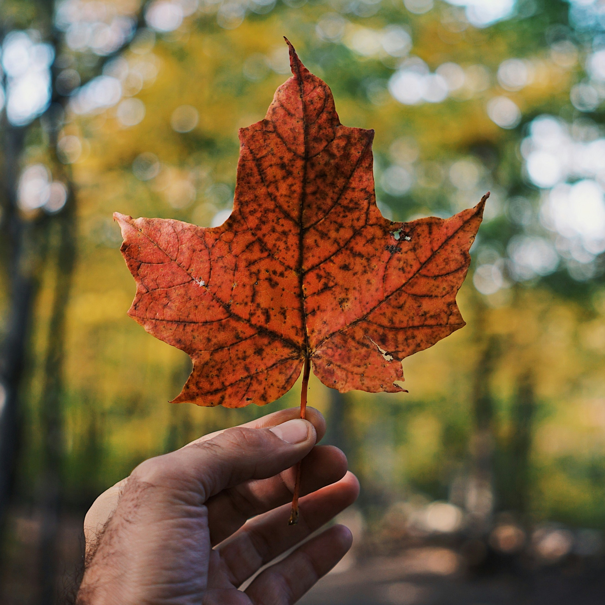

Partipicating in Virtual Culture (ft. Nick)
Nick and Manuel talk about lived experiences in the digital ecosystem of the Internet.
Nick Milcic, Manuel Quiambao
14 Dec 2025
Nick and Manuel talk about lived experiences in the digital ecosystem of the Internet.
Nick Milcic, Manuel Quiambao
14 Dec 2025

When you grow as an immigrant, what is it like? Kayli and Manuel talk all about it.
Kayli Chow, Manuel Quiambao
14 Dec 2025